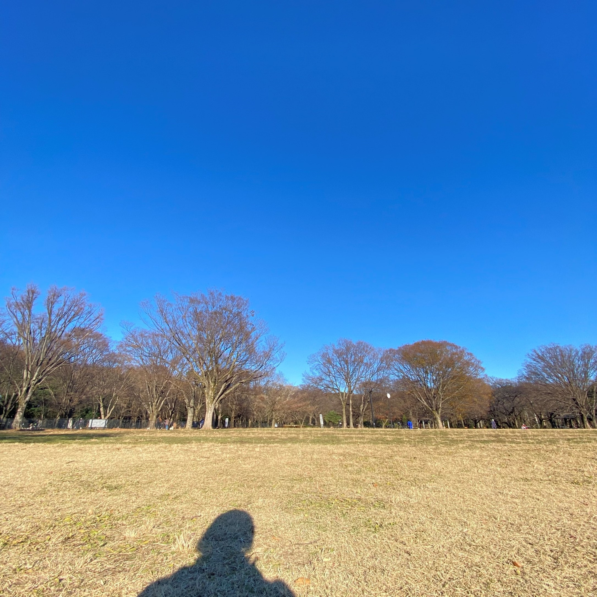
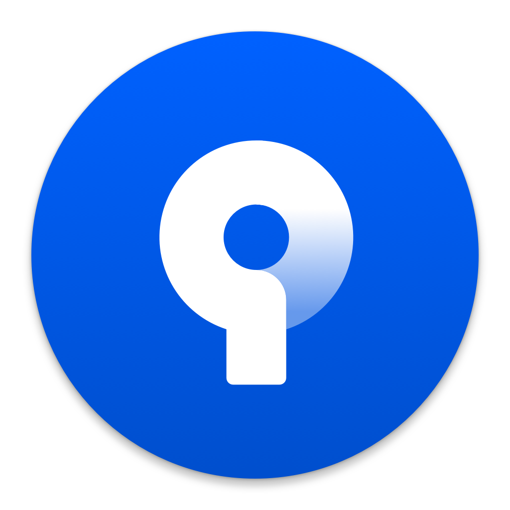
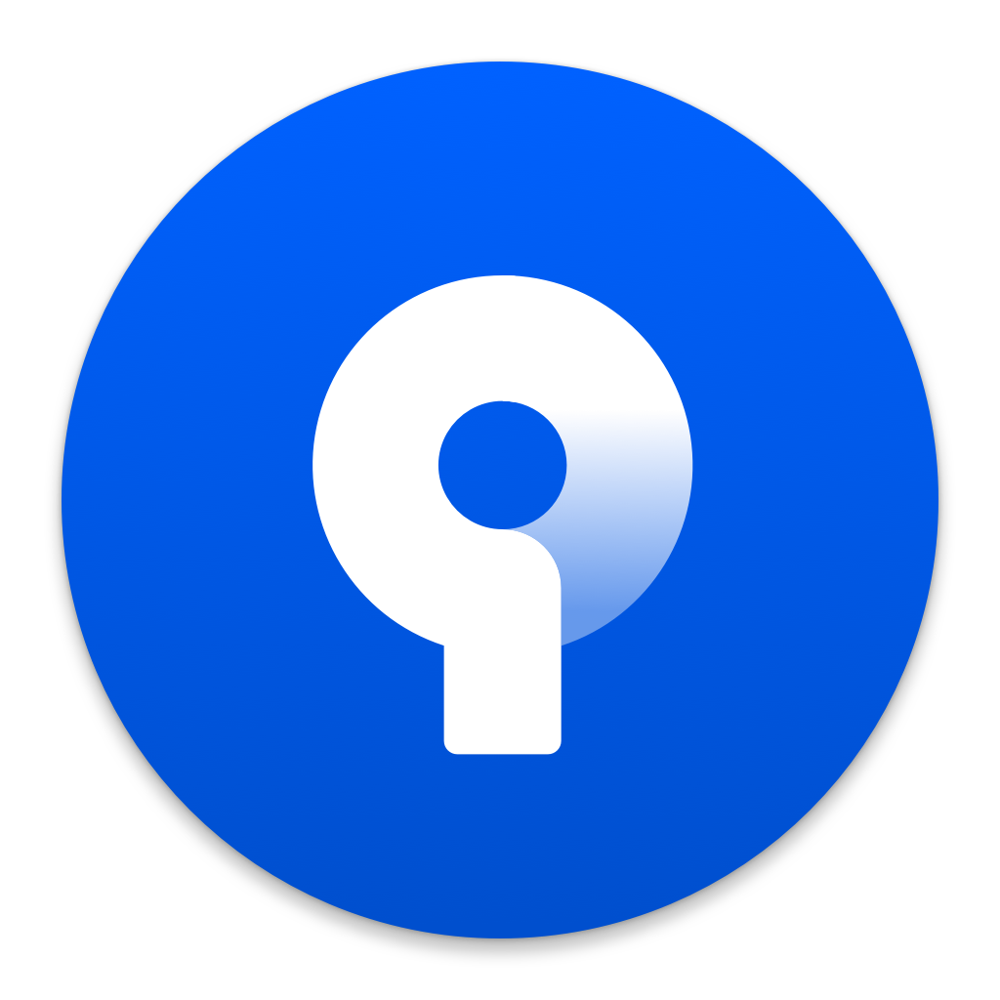

Portfolio
N. Y.
ABOUT
ものづくりで
『生き苦しい』を改善したい
N. Y.
趣味でWebアプリ制作を始めました
今は、デザインとコーディング、ちょこっとプログラミング(PHP)、
データベース構築ができるようになりました
一人でWebアプリの全工程が作れるよう目下勉強中です！
WORKS
Web Design
Web Application
行先掲示板
 

要件定義を受け、8週間でチームで社員の行先・帰社時間がスマホ/PCから分かるWebアプリを制作した。
貸事務所・貸店舗の不動産仲介業の情報システム部門における勤務状況確認Webアプリ制作担当者という設定。
デザインコンセプトは「直感で分かりやすい画面&操作」で、メンバー同士で議論を重ね、機能や想定入力パターン、画面遷移を考えていった。
Webアプリ制作の一連の流れを経験でき、Webアプリのコーディングにも初めて挑戦した。
プログラミングやデータベース構築も一部改良することにも挑戦した。
制作時間：25時間
作成時期：2022.10-11